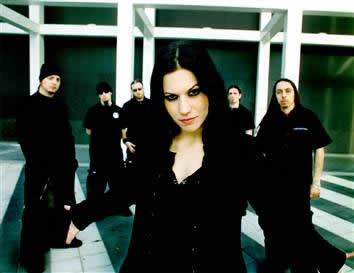
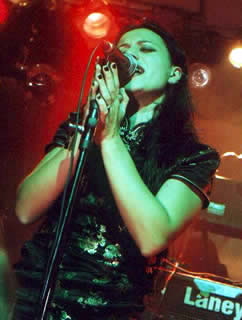

Era a década de 90. Andrea Ferro e Marco
Coti Zelati montavam uma banda de Rock sem grandes pretensões.
Apesar do estilo não ter uma cena forte em Milão,
a banda Sleep of Right chegou a gravação
da primeira Demo com Ferro nos vocais, Claudio Leo na guitarra,
Leonardo Zelati no baixo e Forti na bateria. A sonoridade surpreendia
os jovens integrantes. Mas ainda faltava algo para completar a
proposta da banda.
Cristina Scabbia, namorada de Zelati, foi indicada
por ele para gravar alguns vocais complementares. Cristina não
tinha contato nem experiência com o Heavy Metal, mas já
havia feito participações em projetos com Dance
Music. Foi ai que a história da banda começou a
mudar. As faixas Shallow End e Frozen Feeling
ganharam o brilho da voz suave de Cristina Scabbia no som "ethereal"
da banda italiana.
A
sonoridade do instrumental ousado e inovador, o contraste grave
de Ferro somados aos agudos de Scabbia, chegaram a gravadora Century
Media, que acreditou no potencial e abriu as portas dos estúdios
para os jovens milaneses. Era a grande oportunidade da banda.
O som ficou mais lento e os arranjos polidos destacaram
as influências góticas. O nome também foi
mudado para Lacuna Coil. A Itália, com pouca tradição
no Rock, lançava ao mundo uma banda das mais competentes
e sofisticadas da cena atual.
No ano de 1996, chegava às lojas um EP
intitulado Lacuna Coil. A banda já garantia sua
presença no importantíssimo festival alemão
Wacken, tocando ao lado de The Gathering e Moonspell. Depois da
terceira apresentação, o baterista e o guitarrista
deixaram a banda, os músicos do Moonspell foram convidados
a participarem com Lacuna Coil até o final da turnê.
Um tecladista ainda foi adicionado para a excursão seguinte.
Porém, a idéia não foi aprovada pelos outros
integrantes. Já na Itália, Cristiano Mozzati foi
convidado para a bateria. Cristiano Migliore passou a ser o guitarrista.
In A Reviere foi o primeiro trabalho.
O CD trazia um instrumental refinado e a voz de Cristina Scabbia
mais adaptada à sonoridade "Atmospheric Doom".
Em 1999, os italianos foram uma das principais atrações
do festival holandês Dynamo Open Air, e do Gods
of Metal, da Itália. O grupo contou ainda com as excursões
ao lado de Grip Inc. e Skyclad. Bandas de estilos diferentes e
muito mais experientes, que ajudaram o Lacuna Coil a aprimorar
a própria técnica e aprender com outros músicos.
No início de 2000, o Lacuna Coil prepara
o segundo EP da discografia, intitulado de Halflife,
que fora lançado em março. Tal EP rendeu à
banda a primeira turnê européia como atração
principal. Shows como o de Londres ficaram marcados, pois os ingressos
foram esgotados. O EP incluia a faixa Senzafine cantada
em italiano. No mesmo ano, em outubro, a banda começa a
gravar o álbum Unleashed Memories, sendo lançado
no dia 29 de janeiro de 2001. E esse foi um ano intenso de turnês
para a banda, começando com uma excursão européia
com Theatre
of Tragedy ao longo de janeiro e fevereiro. Eles também
são incluídos no Metal de Odyssey fazendo
turnê com Dimmu Borgir, Nevermore, Inflames e Susperia tocando
treze datas ao longo da Europa. Em abril, Lacuna Coil volta à
Itália para uma série de shows.
Depois do retorno de uma turnê pela América
e uma parada para o Natal, a banda começa a trabalhar no
terceiro álbum de estúdio. Os próximos meses
são dedicados dentro a maior parte para ensaiar e escrever
músicas. Em abril de 2002, a banda trabalha em pré-produção
em Milão, com o produtor e amigo de longa data Waldemar
Sorychta e no dia 17 de abril eles entram no estúdio de
Woodhouse na Alemanha e começam gravação
do álbum que trará reconhecimento global para eles.
Comalies é o título que a banda escolhe
para esse novo álbum, lançado em setembro de 2002.
O álbum é mais pesado e mais dinâmico que
o Unleashed Memories, tendo muitas críticas positivas e
ótima repercussão dentre os fãs. Nesse trabalho
foram adicionados sintetizadores que davam um ar saudosista às
músicas do Lacuna Coil, deixando um pouco, a antiga proposta.
As faixas eram bastante diferentes entre si, o que provou o amadurecimento
da banda e repercutiu de forma extremamente positiva no cenário
underground.
No
restante de 2002, e em 2003 a banda faz várias turnês
na Europa e EUA, e grava o videoclipe da música Heaven's
a Lie que se torna uma das mais tocadas na Itália.
Em 2004 a banda assina com a gravadora Century Media, e continua
fazendo turnês por várias partes do mundo. Também
gravam mais um videoclipe, agora de Swamped, música
que também é incluída na trilha sonora do
filme Resident Evil Apocalypse. No final desse ano, Lacuna
Coil começa a trabalhar em um novo álbum.
Começa 2005 e Comalies continua
vendendo bem; em março o álbum ultrapassou a marca
de 200 mil cópias vendidas. Com a aproximação
do verão o Lacuna Coil continua escrevendo canções
para o novo álbum e se prepara para um grande número
de festivais pela Europa. Em julho, a Century Media relança
todos os álbuns do Lacuna Coil e EPs antes do Comalies,
com novos encartes e extras. Os festivais continuam ao longo dos
meses de verão. Em 23 de outubro, a imprensa internacional
é convidada a uma sessão especial nos Estúdios
de Galáxia em Mol na Bélgica onde a banda revela
seis novas canções: What I see, Fragile, In
Visible Light, Fragments of Faith, Within Me e Our Truth.
Todas elas, seriam lançadas no próximo álbum.
No final de 2005 a banda completa a gravação
de Karmacode, e o lança em 4 de abril do ano seguinte.
Um pouco antes, em 4 de março de 2006, a banda lança
um single, intitulado Our Truth, e que aparece na trilha
sonora do filme Anjos da Noite: A Evolução.
A banda também grava um videoclipe de Our Truth.
Em 2007, a banda se apresenta no festival Hottest
Chicks In Metal. Em seguida, Cristina Scabbia participa da
faixa e do videoclipe de S.O.S (Anything But Love) do
álbum Words Collide do Apocalyptica.
No ano seguinte, já há rumores sobre a gravação
de um novo trabalho e do primeiro DVD.
Finalmente, em dezembro de 2008, é lançado
o DVD Visual Karma (Body, Mind and Soul) que contém
cenas da turnê do álbum Karmacode, além
de trechos de bastidores gravados pelos próprios integrantes.
Ainda, no segundo semestre, a banda grava, em Los Angeles, o disco
Shallow Life.
Lançado em abril de 2009, o mais recente
trabalho do Lacuna Coil, Shallow Life, traz doze faixas
que confirmam as mudanças de sonoridade iniciada nos discos
anteriores. Muito mais próximo do Rock e com várias
intervenções de elementos eletrônicos, o disco
ganha espaço entre o público mais jovem e desagrada
um pouco aos ouvintes mais antigos.
De qualquer forma, com talento
e personalidade, a banda italiana segue sua trilha de sucesso
ao longo dos anos e se consolida como um ícone dos headbengers
mais tradicionais, aos simples apreciadores do bom e velho metal.
Por
Spectrum
Downloads
Disponíveis: